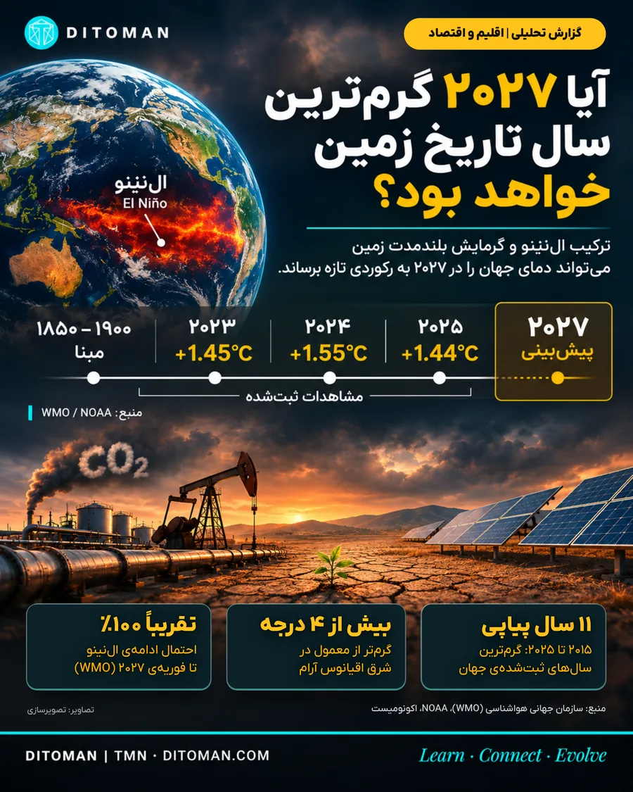
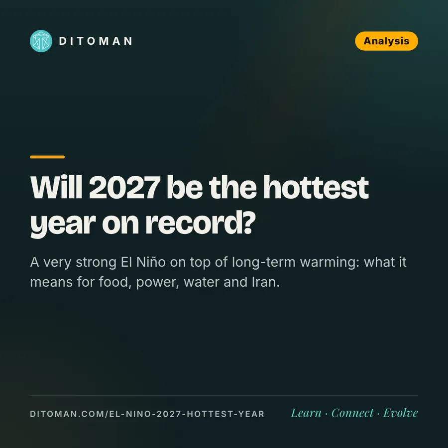

آیا ۲۰۲۷ گرمترین سال تاریخ زمین خواهد بود؟
Will 2027 be the hottest year on record?
از انقلاب صنعتی تا النینو؛ چرا زمین گرمتر میشود و این تغییر چه اثری بر اقتصاد، ایران و زندگی ما دارد؟
From the Industrial Revolution to El Niño: why the Earth is warming and what it means for the economy, Iran and our lives
سازمان جهانی هواشناسی میگوید ۲۰۲۷ ممکن است گرمترین سال ثبتشدهی تاریخ شود. دلیلش ترکیب دو چیز است: گرمایش بلندمدتی که از انقلاب صنعتی شروع شد، و یک النینوی قوی که حالا در اقیانوس آرام در حال شکلگیری است. این گزارش توضیح میدهد چه اتفاقی افتاده، چرا مهم است و برای جیب ما و ایران چه معنایی دارد.
1. خبر چیست؟
- سازمان جهانی هواشناسی (WMO) در گزارش «وضعیت اقلیم ۲۰۲۶» که در COP31 آنتالیا منتشر شد، گفت ۲۰۲۷ ممکن است رکورد دمای جهان را بشکند، چون النینو بیشترین اثر گرمایشیاش را معمولاً در سال بعد از شکلگیری میگذارد
- دمای جهان در نُه ماه اول ۲۰۲۶ بهطور میانگین حدود ۱٫۴۷ درجه بالاتر از دوران پیشاصنعتی بوده است
- سلسته سائولو، دبیرکل WMO، این النینو را «خارج از نمودار» توصیف کرده و گفته شبیه هیچ النینویی نیست که WMO تا امروز پایش کرده است
- مجلهی اکونومیست هم در ۲۳ نوامبر همین پیشبینی را برجسته کرد
رکورد ۲۰۲۷ هنوز پیشبینی است، نه واقعیت قطعی.
2. در اقیانوس آرام چه خبر است؟
بر اساس گزارشهای مرکز پیشبینی اقلیم آمریکا (NOAA CPC) و WMO:
| شاخص | مقدار |
|---|---|
| وضعیت رسمی | هشدار النینو (El Niño Advisory) |
| شاخص Niño-3.4 (اکتبر ۲۰۲۶) | ۲٫۱+ درجه بالاتر از معمول |
| شاخص Niño-1+2 (نزدیک سواحل آمریکای جنوبی) | ۳٫۹+ درجه |
| دمای سطح آب در بخشهایی از شرق اقیانوس آرام | بیش از ۴+ درجه بالاتر از معمول |
| احتمال النینوی قوی تا بسیار قوی تا ژانویه-مارس ۲۰۲۷ | بیش از ۸۰٪ (NOAA) |
| احتمال ادامهی النینو تا فوریهی ۲۰۲۷ | تقریباً ۱۰۰٪ (WMO) |
| دمای زیر سطح آب در ژوئیه و اوت | در بعضی مناطق بیش از ۸ درجه بالاتر از معمول |
NOAA همچنین احتمال داده این رویداد «تاریخی» باشد، یعنی از همهی النینوهای ثبتشده از ۱۹۵۰ قویتر.
3. زمین چقدر گرم شده؟
| سال | افزایش دما نسبت به ۱۸۵۰ تا ۱۹۰۰ |
|---|---|
| ۲۰۲۳ | ۱٫۴۵+ درجه |
| ۲۰۲۴ | ۱٫۵۵+ درجه (گرمترین سال ثبتشده تا امروز) |
| ۲۰۲۵ | ۱٫۴۴+ درجه (دوم یا سوم، بسته به داده) |
| ۲۰۲۶ (نُه ماه اول) | حدود ۱٫۴۷+ درجه |
| ۲۰۲۷ | پیشبینی: احتمال رکورد تازه |
- به گفتهی WMO، هر یازده سال ۲۰۱۵ تا ۲۰۲۵، یازده سال گرم ثبتشدهی جهاناند و با ۲۰۲۶ این رشته به دوازده سال رسیده است
- نکتهی جالب: ۲۰۲۵ با لانینا (پدیدهی سردکننده) شروع و تمام شد و باز هم یکی از سه سال گرم تاریخ بود؛ یعنی زیربنای گرمایش، گازهای گلخانهای است
- عدد ۱٫۵ درجهی توافق پاریس برای میانگین بیستساله است؛ یک یا دو سال بالای ۱٫۵ یعنی شکست هدف نیست، اما زنگ خطر است
4. خط زمانی گرمایش
| سال | رویداد |
|---|---|
| حدود ۱۷۶۰ | آغاز انقلاب صنعتی و گسترش زغالسنگ |
| ۱۸۵۰ | آغاز دورهی مرجع ثبت دمای جهان |
| ۱۸۹۶ | محاسبهی اثر CO₂ بر دمای زمین توسط سوانته آرنیوس |
| ۱۹۵۸ | آغاز اندازهگیری پیوستهی CO₂ در رصدخانهی مائونالوا |
| ۱۹۸۸ | تأسیس هیئت بیندولتی تغییر اقلیم (IPCC) |
| ۱۹۹۷ تا ۹۸ | یکی از قویترین النینوهای قرن بیستم |
| ۲۰۱۵ | توافق اقلیمی پاریس؛ النینوی قوی ۲۰۱۵ تا ۱۶ |
| ۲۰۲۴ | گرمترین سال ثبتشده، حدود ۱٫۵۵+ درجه |
| ۲۰۲۶ | شکلگیری النینوی بسیار قوی |
| ۲۰۲۷ | احتمال رکورد تازه |
زمین در گذشتههای دور دورههای گرمتری هم داشته است. منظور از رکورد، گرمترین سال در دوران اندازهگیری مدرن (حدود ۱۷۶ سال) است.
5. النینو دقیقاً چیست؟
- حالت عادی: بادهای تجاری آب گرم سطحی را به سمت غرب اقیانوس آرام (اندونزی و استرالیا) میرانند و در شرق، آب سرد از عمق بالا میآید
- النینو: این بادها ضعیف میشوند و آب گرم به مرکز و شرق اقیانوس پخش میشود. اقیانوس گرمای بیشتری به جو میدهد و الگوی باد و باران در نقاط دور دنیا تغییر میکند
- لانینا: حالت برعکس، با اثر سردکننده بر دمای جهانی
- النینو هر دو تا هفت سال یک بار رخ میدهد و پدیدهای طبیعی است. فرق امروز این است که روی زمینی رخ میدهد که گازهای گلخانهای از قبل گرمش کردهاند؛ یعنی یک موج طبیعی روی یک سطح آب بالاآمده
- اثر النینو بر دمای جهانی معمولاً با چند ماه تأخیر ظاهر میشود؛ برای همین سال بعد از اوج آن (اینجا ۲۰۲۷) گرمتر است. همین الگو در ۱۹۹۸ و ۲۰۱۶ هم دیده شد
6. اثر جهانی: چه کسانی بیشتر تحت تأثیرند؟
الگوهای معمول النینو (همیشه تکرار نمیشوند):
| منطقه | اثر معمول |
|---|---|
| استرالیا، اندونزی، جنوب شرق آسیا | خشکی، آتشسوزی، افت محصول نخل روغنی |
| هند و پاکستان | موسون ضعیفتر، گرمای شدید |
| جنوب آفریقا | خشکسالی و افت ذرت |
| پرو و اکوادور | باران سیلآسا، افت صید ماهی آنچوی |
| آمریکای مرکزی | خشکی و فشار بر کشاورزی و کانال پاناما |
| آفریقای شرقی | بارش بیشتر |
WMO میگوید در ۲۰۲۶ موجهای گرمای خطرناک هند، پاکستان، بخش بزرگی از آسیا و آمریکای شمالی را گرفت و فقط در اروپا دهها هزار مرگ اضافی گزارش شد. سطح دریا و گرمای اقیانوس هم رکورد زدند و حدود ۹۰۰ میلیون نفر ساکن سواحل کمارتفاع در معرض خطر بیشترند.
7. گرمایش و جیب مردم
| حوزه | اثر اقتصادی احتمالی |
|---|---|
| غذا | تغییر برداشت گندم، برنج، شکر، قهوه، کاکائو و روغن نخل؛ النینوهای گذشته قیمت این کالاها را بالا بردهاند |
| انرژی | تقاضای بیشتر برق برای سرمایش؛ فشار بر شبکه در تابستان |
| آب | کمآبی سدها، هزینهی بیشتر تأمین آب |
| بیمه | خسارت بیشتر و حق بیمهی بالاتر |
| حملونقل | کمآبی رودها و کانالها (مثل پاناما) و اختلال در زنجیرهی تأمین |
| مسکن | اهمیت بیشتر عایقکاری و سرمایش کممصرف |
| اشتغال | نیاز بیشتر به متخصص آب، انرژی، کشاورزی هوشمند و داده |
یعنی تغییر اقلیم فقط موضوع محیط زیست نیست؛ عاملی در تورم، هزینهی زندگی و تصمیمهای سرمایهگذاری است.
8. ایران چه تأثیری میگیرد؟
سه حوزه برای ایران حساساند: آب، برق و غذا.
- بارش: النینو الزاماً به معنی کمبارشی ایران نیست. پژوهشها نشان دادهاند در بعضی سالهای گذار از لانینا به النینو، بارش پاییزی بیشتر مناطق ایران، بهویژه نیمهی شمالی، بالاتر از میانگین بوده است؛ اما نمونهها کماند و اثر به فصل، منطقه و جریانهای دیگر (مثل دوقطبی اقیانوس هند که امسال مثبت پیشبینی شده) بستگی دارد
- دما: گرمای جهانی بیشتر یعنی تابستان سختتر و تقاضای بیشتر برق سرمایشی، در کشوری که همین الان با ناترازی برق روبهروست
- غذا و قیمت: ایران واردکنندهی گندم، برنج، روغن و شکر است؛ اگر النینو برداشت جهانی را کم کند، فشار قیمتی وارداتی بیشتر میشود
- برق آبی: خشکسالی تولید سدها را کم میکند؛ در نیمهی اول ۱۴۰۴ تولید برق آبی حدود ۴۰٪ افت کرده بود
برای پیشبینی وضعیت ایران در ۱۴۰۶ باید منتظر پیشبینیهای منطقهای معتبر (سازمان هواشناسی کشور و مراکز اقلیمی منطقهای) ماند.
9. خبر امیدوارکننده: آمادهشدن ممکن است
برخلاف یک قرن پیش، امروز النینو را ماهها قبل پیشبینی میکنیم:
- ماهواره و هوش مصنوعی برای پیشبینی دقیقتر آبوهوا
- سامانههای هشدار زودهنگام: کشورهایی که چنین سامانهای دارند از ۵۶ کشور در ۲۰۱۵ به ۱۳۶ کشور در ۲۰۲۵ رسیدهاند
- کشاورزی هوشمند و آبیاری دقیق
- خورشید و باتری برای پوشش اوج سرمایشی تابستان؛ همان ساعتهایی که آفتاب بیشترین است
- ساختمان کممصرف و کولرهای پربازده
- ابزارهای مالی: بیمهی شاخصمحور برای کشاورزان، ذخیرهی راهبردی غذا و قراردادهای خرید زودتر
10. نگاه دیتومان
ارزش پیشبینی علمی فقط دانستن آینده نیست؛ فرصتی است برای تصمیم بهتر. برای خانوادهها یعنی مصرف هوشمند برق و آب، برای کسبوکارها یعنی مدیریت ریسک زنجیرهی تأمین، و برای کشورها یعنی آمادهسازی شبکهی برق، ذخیرهی غذا و هشدار زودهنگام.
النینو طبیعی است و میگذرد؛ گرمایش زیربنایی نمیگذرد. اما هر دو قابل پیشبینیاند، و چیزی که قابل پیشبینی است، قابل آمادهشدن هم هست.
این گزارش آموزشی است. رکورد ۲۰۲۷ پیشبینی است و اثرات منطقهای النینو در هر رویداد متفاوت است. احتمالهای NOAA از گزارش اکتبر ۲۰۲۶ است.
بیشتر بخوانید
منابع
- WMO: State of the Climate update, 2027 could break records (via PINA, 10 Nov 2026)
- WMO: El Niño set to become very strong, raising risks into 2027 (3 Sep 2026)
- NOAA CPC: ENSO diagnostic discussion (Oct 2026)
- WMO: 2025 was one of the warmest years on record
- WMO: 2024 warmest year on record at about 1.55°C
- Bahrami et al. (2021), Iran autumn precipitation during ENSO transitions, Climate 9(7)
آخرین بازبینی: ۳ آذر ۱۴۰۵. رکورد ۲۰۲۷ پیشبینی است. احتمالهای NOAA از گزارش اکتبر ۲۰۲۶ است و گزارش ۱۲ نوامبر را مستقیم ندیدیم. این گزارش آموزشی است.